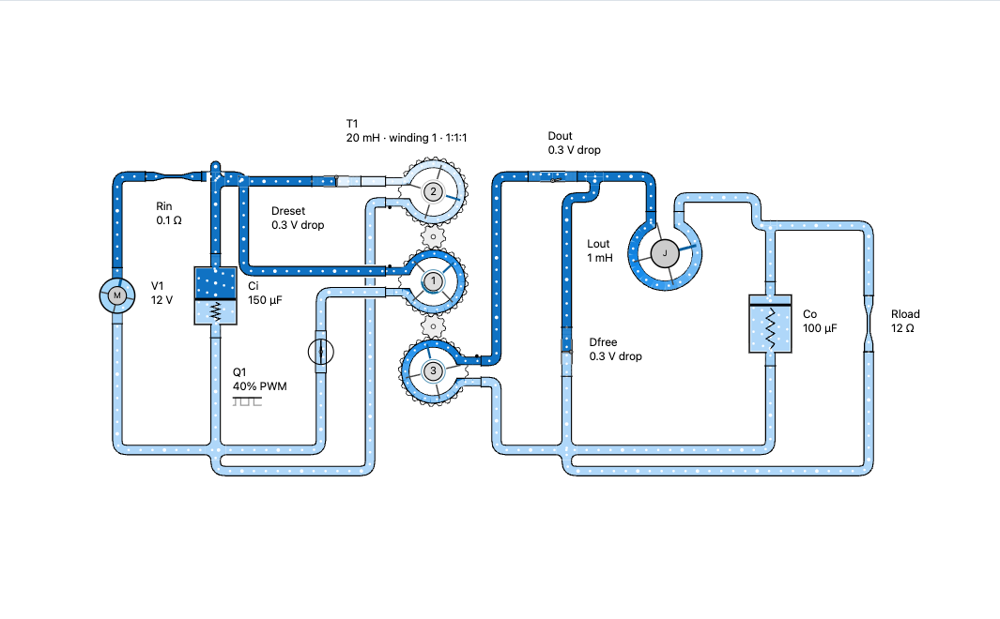

Forward converterSaved just now

Circuit ready12 components · 15 pipesNo errors
Run simulation0.158 ms
T1 · primary voltage
T1 · primary current
T1 transformerCoupled windings
88%
0.158 ms
⌁
InertanceForward converter lesson
3 of 5
1Energy crosses the coupled windingsThe gears show the turns ratio; water flow shows winding current.
0.158 ms
CW
0.158 ms
T1 · primary voltage11.847 V at 0.158 ms
12 V
T1 · primary current−0.140 A
Selected component equations
Coupled inductors
Stored magnetic energy
Equations follow the selected component and the current simulation cursor.
Transformer T1
Simulation settings
Forward converterEditable example
Transformer T120 mH · 1:1:1 · k 1.000
0.158 ms
Primary voltage11.847 V
Selected equation
Voltage is proportional to how quickly current changes.

 Forward converter
Forward converter88%
Transformer T120 mH · 1:1:1 · k = 1.000
0.158 ms40.000 ms
WaveformsVoltage and current share the simulation cursor
Signals · 3 shown
T1 W1 · V
V̄ = 0 VVpk = 12.0 VVmin = −12.0 VVrms = 8.49 Vv = L · di/dtVoltage · V
Current · A